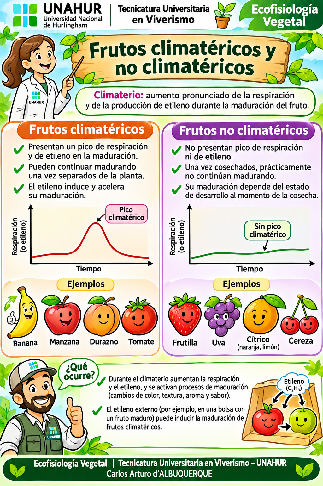

ECOFISIOLOGÍA VEGETAL
Cinco recorridos.
Un mismo jardín.
Todo lo que venimos estudiando, reunido para seguir explorando juntos. Elegí una guía y volvé a sus láminas, experiencias y desafíos.
Elegir una guía ↓5 guías completas · Láminas originales · Actividades interactivas

EXPLORAR ✦ EXPERIMENTAR ✦ RECORDAR ✦ CONECTAR
LA COLECCIÓN / TUS ÚLTIMAS CINCO GUÍAS
Elegí por dónde seguir.
Cada guía conserva su diseño,
sus contenidos y sus actividades.
01 / CICLO VEGETALDe la luz
El tiempo
Vivir en
Todo empieza
Las señales
De la luz
a los frutos.
Luz, raíces, senescencia, floración y desarrollo de los frutos.
Explorar guía ↗ 02 / DESARROLLO VEGETALEl tiempo
de florecer.
Desarrollo, juvenilidad, temperatura y fotoperíodo.
Explorar guía ↗ 03 / HOMEOSTASISVivir en
equilibrio.
Volvé a las señales y respuestas que organizan la vida vegetal.
Explorar guía ↗ 04 / GERMINACIÓNTodo empieza
en una semilla.
Explorá la germinación a través de sus láminas y experiencias.
Explorar guía ↗ 05 / CONTROL HORMONALLas señales
del crecimiento.
Recorré el control hormonal y experimentá con el simulador de auxinas.
Explorar guía ↗PARA ESTUDIAR JUNTOS
Una idea se entiende mejor
cuando se comparte.
Explorá las láminas, probá las actividades y conversá las respuestas con tus compañeros.
Volver a las guías ↑